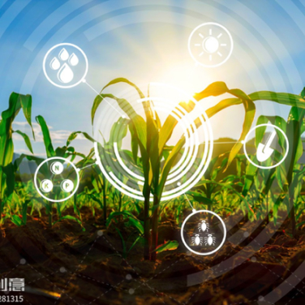
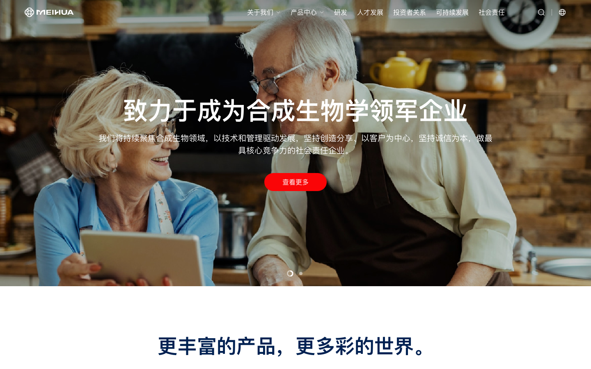
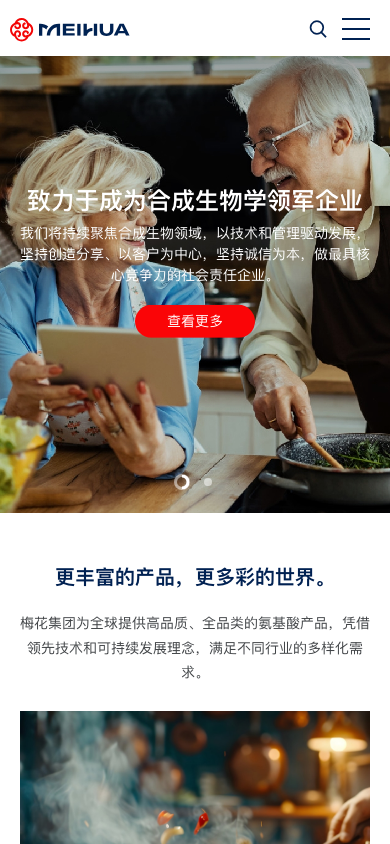

MEIHUA GROUP · SYNTHETIC BIOLOGYOBSERVED 2026.08.23
CASE / 005FROM PLANT TO POSSIBILITY
把一株植物，
讲成一条全球产业链
美华官网没有从氨基酸参数开场，而是从家庭、食物和健康开始，再将产品平台、全球品质、规模化制造与未来应用逐层推向访客。
案例中的图片、数字与联系方式均来自公开首页观察；它们是研究证据，不是新项目可直接复用的品牌事实。
01 / NARRATIVE MAP
从日常生活开始，
再进入生物制造
原站把合成生物学放在页面后半段，而把“美味、营养与健康”放在入口。这不是降低技术含量，而是先把复杂产业翻译成普通人能感知的结果。
01 / HUMAN SCALE
先让产品回到人的一餐
家庭、食材与陪伴的 Hero，把氨基酸从抽象原料变成健康生活的底层能力。
一站式产品采购平台
动物营养、鲜味剂、食品原料、胶体多糖、动物保健、植物基蛋白、植物营养组成平行入口。
PRODUCT FAMILIES品质数字负责跨越信任鸿沟
全球服务经验、覆盖国家或地区、终端服务人口形成一条从时间到范围再到影响面的证据条。
SELF-DESCRIBED ON HOMEPAGE把未来应用留在页面末端
氨基酸、生物基化学品、DNA 合成、医药中间体等词汇，将品牌从现有目录推向持续探索。
APPLICATION FIELDS02 / PRODUCT PLATFORM
不是 SKU 墙，
而是七扇场景入口
原站桌面端用横向展开的产品卡片表现“一个平台，多种采购任务”；移动端则改成 Slick 可滑动列表。案例页保留七类结构，并增加键盘与触摸等价切换。
PRODUCT FAMILY 01
Livestock Nutrition
“Feed better, grow stronger” 将产品类别与结果承诺绑在一起；用户先理解用途，再进入具体氨基酸产品和应用范围。
进入原站入口结构建议
保持分类数量与后台真实产品、详情路由同步；当入口超过 6 个，使用分类或横向滑动，不要继续压缩字体。
03 / GLOBAL PROOF
美华品质，
向世界展开
这一段用一个强背景、三个数字和三种单位完成“规模化可信度”的视觉收束：时间、地理范围、服务人口。它适合做记忆点，但不能代替可核验资料。
ONE SOURCE CLAIM / VERIFY BEFORE REUSE
查看原站关于我们 ↗04 / BIO-MANUFACTURING
让技术像一张可探索的地图
页面后半段用固定的中心视觉、滚动定位和多项应用标签，把“高效、精准、超大规模”从一句标题变成可以逐层浏览的制造能力地图。

MEIHUABIOMANUFACTURING
FIELD 01 · AMINO ACIDS
Unlocking the Potential of Renewable Plant-Based Resources
应用领域标签围绕中心能力展开，让访客看到研发、制造与终端应用之间的持续扩张。
探索七个方向可迁移条件
当企业同时拥有现有产品与未来研发方向时，可以用“中心能力 + 应用轨道”表达探索边界；但每个方向必须有详情、证据或阶段状态，不能只做漂亮的环形装饰。
05 / MOTION AUDIT
滚动不是炫技，
它要让复杂技术变慢
原站使用 Slick、WOW、CountUp、Lottie、视频固定和滚动进度来建立节奏。案例页把原有节拍拆成可复用的实现条件，并标出性能与无障碍退路。
CHAPTER 01 · HERO
先用家庭与食物讲清“为什么”
Hero 采用淡入切换，桌面端每 10 秒切换一张；可视化圆环与轮播进度同步，图片是主证据，文字保持 HTML 可读。
- 图片先定情绪
- 标题再给方向
- 按钮承接详情
06 / RESPONSIVE AUDIT
桌面端讲体系，
手机端先保证能滑、能读
原站为 PC 与移动端提供不同 Hero 图片，并在 1200px 以下将产品入口交给 Slick。案例页保留对比证据，同时把移动端不应复制的 viewport 限制标出来。


KEEP
值得复用
- 消费场景让技术品牌先建立亲和力
- 产品分类与场景结果绑定
- 数字条按时间、范围、影响递进
- 未来应用把研发叙事留在页面后段
REFINE
需要重构
- 移除 user-scalable=no，保留缩放能力
- 不要把视频/Lottie当作唯一技术解释
- 动效依赖应提供无脚本静态内容
- 统计与分析脚本需要最小化并说明用途
07 / AI INSTRUCTIONS
给 AI 的不是一张家庭照片，
而是一条翻译路径
以下规则适用于生物制造、食品配料、农业科技和其他“技术深、用户广”的企业官网。复制结构，不复制美华的企业事实。
从结果开始，再讲原料
当技术离用户很远时，先用食物、健康、环境或日常动作建立结果感，再进入材料和工艺。
技术需要被翻译
用平台词承接多品类
产品入口按采购任务平行展开，每类用一句结果描述，不要把所有型号挤入首屏。
产品跨度较大
数字必须有三件套
所有规模数字同时记录单位、统计日期、来源和验证状态；“全球”不是免核验的标签。
首页展示规模
把未来方向做成可进入地图
研发领域可以用中心能力与轨道组织，但每个方向都需要详情、阶段或证据，不能只留图形。
业务仍在扩张
动效增强，不替代内容
轮播、计数、固定滚动、视频和 Lottie 都应有静态 poster、可暂停操作、键盘状态与 reduced-motion。
首页动效较多
08 / SOURCE ARCHIVE
把一次观察，留成可复核样本
本案例保留中英文首页快照、核心 CSS/JS、Lottie 数据、Hero/产品/生物制造图片及桌面/手机截图。完整映射和版权边界见 manifest.md。